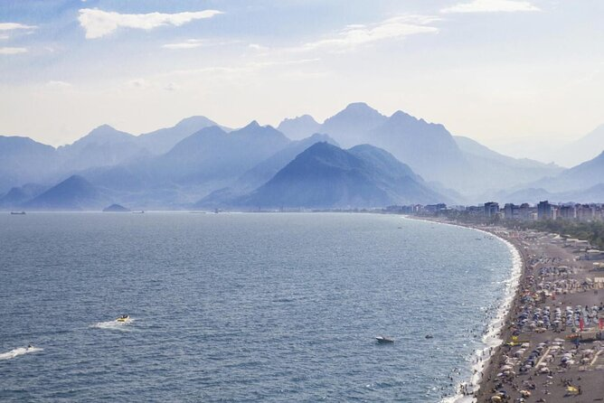

One of Antalya’s two main city beaches, Konyaalti Beach (Konyaaltı Plajı) is a popular spot for both locals and travelers. Stretching for 4.3 miles (7 kilometers) west of the city, Konyaalti has a mix of pebble and sand beaches, where sun worshipers can swim and enjoy water sports against the dramatic backdrop of the Beydağlari Mountains.
